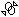

Project to Sketch Options dialog box
- Project with offset
-
Specifies that you want to offset the included geometry from the parent geometry.
- Project internal face loops
-
Specifies that any internal edges will also be included when you select a face. Internal edges lie completely within the outside boundary of the selected face. Holes within a face are an example of internal edges.
- Assembly Part Projection Options
-
Defines the options you want when projecting elements from an assembly sketch or another part in the assembly.
- Allow locate of peer assembly parts and sketches
-
Allows you to locate and select geometry from other parts in the assembly and assembly sketches. When this option is set, you can locate and select geometry from other parts in the assembly and assembly sketches. When this option is cleared, you cannot locate or select geometry from other parts and sketches. It can be useful to clear this option when you want to project edges from the current part and not from another part in the assembly.
- Maintain associativity when projecting geometry from other parts in the assembly
-
Specifies that the projected geometry is associatively linked to the peer part or the assembly sketch.
You can only include peer part or assembly sketch geometry associatively when the Project to Sketch command from Part and Assembly sketches option is set on the Inter-Part tab on the Solid Edge Options dialog box. The associative link will only be established when the current document is below the assembly in the document tree. A special relationship symbol

, is used to indicate that the projected geometry is associatively linked to the parent geometry.
- Show this dialog box when command begins
-
Displays the Project to Sketch Options dialog box when you select the Project to Sketch command.
Look up more details
Sketch View commandSketch command
Closed Sketch Indicator command
Project to Sketch command
Project to Sketch command bar
Peer Edge Locate command
Silhouette Edge Locate command
Clean Sketch command
Clean Sketch command bar
Clean Sketch Options dialog box
Copy Sketch command
Copy Sketch command bar
Copy Sketch To Target dialog box
Activate Regions command
Merge with Coplanar Sketches command
Migrate Geometry and Dimensions command
Tear-Off Sketch command
Tear-Off Sketch command bar
Tear-Off Sketch Options dialog box